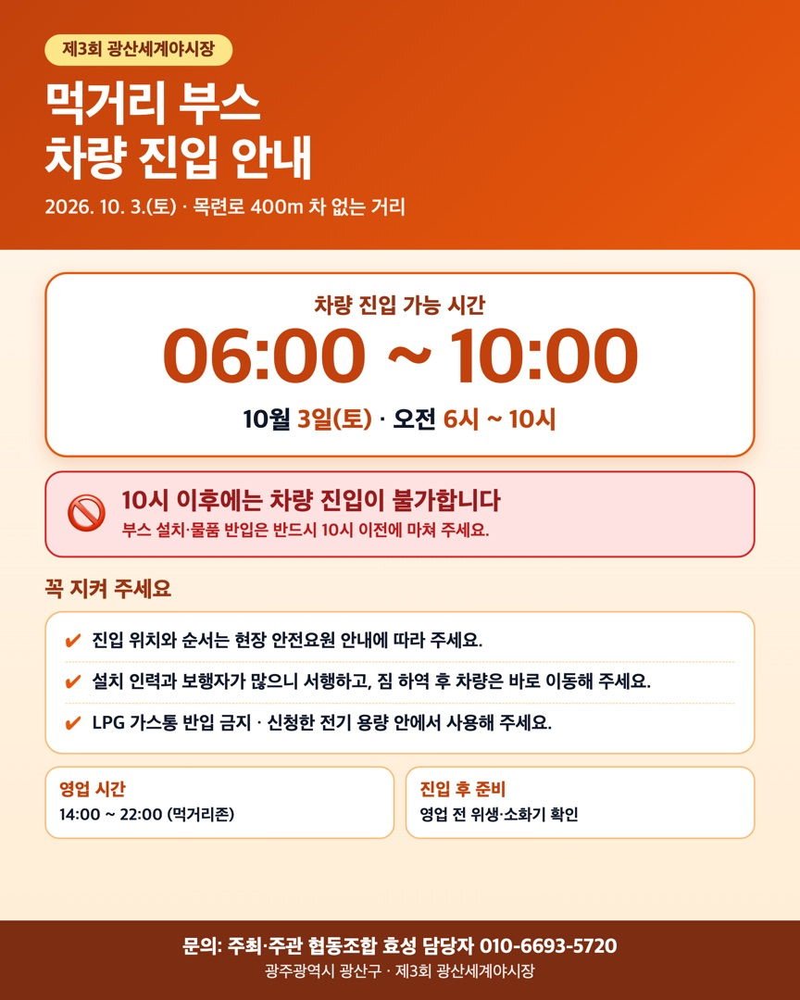

부스 · 구역 운영자
먹거리 부스 차량 진입 안내
10월 3일 오전 6시 – 10시

이미지를 누르면 크게 볼 수 있고, 길게 눌러 저장할 수 있습니다.
먹거리 부스 차량 진입 가능 시간을 안내드립니다. (첨부 이미지 참고)
차량 진입 가능 시간
- 2026년 10월 3일(토) 오전 6시 ~ 오전 10시
- 오전 10시 이후에는 차량 진입이 불가합니다.
- 부스 설치와 물품 반입은 반드시 10시 이전에 마쳐 주세요.
꼭 지켜 주세요
- 진입 위치와 순서는 현장 안전요원의 안내에 따라 주세요.
- 설치 인력과 보행자가 많으니 서행하고, 짐 하역 후 차량은 바로 이동해 주세요.
- LPG 가스통은 반입할 수 없으며, 신청하신 전기 용량 안에서 사용해 주세요.
영업 시간
- 먹거리존 14:00 ~ 22:00 (영업 전 위생·소화기를 확인해 주세요.)
궁금하신 점은 담당자(010-6693-5720)로 문의해 주세요.
안전하고 맛있는 야시장을 위해 협조해 주셔서 감사합니다.